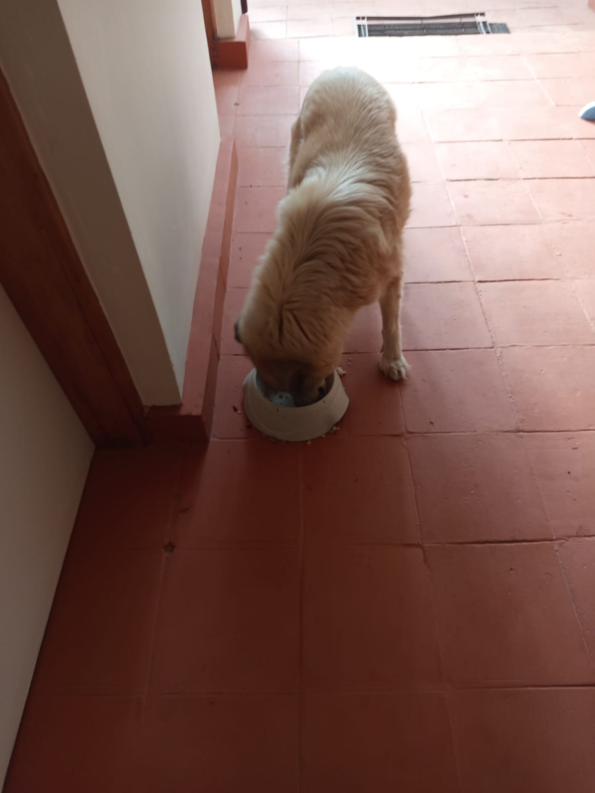

Mucheru World of Golf
Comprehensive golf course civil works, putting green foundation stabilization, and primary irrigation pipeline infrastructure advanced systematically at Mucheru World of Golf under the active supervision of Mr. Gichuhi and Ken:
- Spreading of Red Volcanic Topsoil Across Green No. 13 & 18 (Completed): Ground personnel utilized shovels, wheelbarrows, and manual grading rakes to systematically spread, level, and distribute copious volumes of fertile red volcanic loam across the foundation aprons, perimeter collars, and putting surfaces of Greens 13 and 18. This builds the critical organic rootzone profile above the underlying drainage gravel and stone sub-base.
- Manual Sledgehammer Fracturing of Hardcore Rocks (In Progress): Field labor crews equipped with heavy sledgehammers continued breaking down oversized hardcore rock aggregates within the geotextile-lined green foundation basins. This precision rock-breaking achieves interlocking void compaction and optimal sub-surface drainage permeability across the putting green beds.
- Excavation of Trenches for Main Irrigation Distribution Pipes (In Progress): Trenching crews opened linear, deep underground trenches running parallel to the course wire mesh perimeter boundary fence. These dedicated utility corridors are being excavated to accurate depth and gradient to accommodate high-pressure mainline irrigation pipes, takeoff nodes, and future fairway sprinkler junctions.
Key Accomplishments — Mucheru World of Golf
Spreading of red volcanic loam concluded across Greens 13 and 18; ongoing manual fracturing of hardcore rock aggregates to stabilize putting green sub-bases; and continuous linear trenching underway along the boundary fence for the primary irrigation distribution network.
Field operations video documenting September 10 progress at Mucheru World of Golf, showcasing the red soil distribution across Greens 13 and 18, manual rock fracturing, and linear trenching for the main irrigation pipelines:
🎥 Mucheru World of Golf — Daily Operations & Course Progress
Comprehensive field progress video documenting September 10 operations at Mucheru World of Golf, highlighting red topsoil spreading on Greens 13 & 18, hardcore rock shattering, and boundary pipeline trench excavation.
Field photographic evidence sequentially documenting putting green basin construction, red soil spreading, and linear mainline irrigation pipe trenching:

Aerial Survey — Putting Green Basin & Hardcore Bed
High-altitude drone aerial perspective illustrating the geotextile-lined green basin filled with compacted fractured hardcore stones, surrounded by red soil mounds and perimeter labor teams.

Manual Red Volcanic Soil Spreading & Apron Grading
Labor personnel actively wheelbarrowing and shoveling rich red volcanic topsoil across the green foundation collar and sub-base, with drainage pipe visible in the foreground.

Main Irrigation Network — Boundary Pipeline Trenching
Ground crew excavating a linear trench corridor parallel to the perimeter wire mesh fence to install the main water supply pipeline, with green earthworks in the background.

Linear Trench Alignment & Irrigation Pipe Corridor
Perspective along the fence post boundary showing continuous trench excavation progress and black flexible pipe alignment beside the course access roadway.
Chaka Farms
Daily livestock dairy production, working canine socialization with grazing livestock, off-leash physical conditioning, and farm compound hygiene were executed systematically across Chaka Farms:
- Dairy Milking Production (Kamandau): Daily dairy cow milking operations achieved a total gross production of 5.0 Litres, recorded strictly in Litres with 3.0L obtained in the morning session and 2.0L in the evening session.
- Reconciliation of Milk Allocations & Farm Reserve: Authorized milk disbursements drawn out of the total yield totaled 2.0 Litres, comprising 1.0 Litre for goat kids (0.5L morning + 0.5L evening), 0.5 Litres allocated to Gladys, and 0.5 Litres allocated to Kamau. The resulting net farm milk reserve stood at 3.0 Litres.
- Morning Pasture Socialization with Goat Flock (Willy): Working canine unit dogs Zara, Bella, and Coby were taken into the open farm grazing fields during morning pasture grazing. The dogs practiced calm, peaceful socialization, walking off-leash alongside the goat flock to reinforce gentle, non-reactive behavior around farm livestock.
- Canine Paw Command Conditioning & Obedience Drills: Willy conducted focused individual conditioning sessions reinforcing the "Paw" cue to strengthen canine handler communication, tactile responsiveness, and disciplined impulse control.
- Kennel Hygiene & Biosecurity Sanitation: Thorough daily scrubbing, hosing, and sanitization of the kennel blocks and resting pens were carried out to ensure clean and hygienic canine living quarters.
- Afternoon Off-Leash Farm Exploration & Conditioning: In the afternoon, structured off-leash walking, free running, and exploratory pack exercise were conducted across the farm grounds with all canine unit dogs, promoting canine cardiovascular fitness and mental enrichment.
- General Compound Cleanliness & Upkeep (Margaret & Monica): Margaret and Monica performed daily compound sweeping, pathway tidying, and routine facility grounds maintenance throughout the farmstead.
Key Accomplishments — Chaka Farms
Dairy milking reconciled at 5.0L gross with 3.0L net farm reserve; livestock pasture socialization successfully conducted with Zara, Bella & Coby alongside grazing goats; afternoon off-leash pack conditioning completed with all dogs; paw command conditioning and kennel sanitation executed; and general compound cleanliness maintained.
Quantitative daily milk production log recorded strictly in Litres (L). Allocations to goat kids and staff represent disbursements drawn out of total gross yield:
| Item / Description | Morning (L) | Evening (L) | Total (L) | Deduction (L) | Farm Balance (L) |
|---|---|---|---|---|---|
| Cow Milking Yield (Gross Production) | 3.0 L | 2.0 L | 5.0 L | — | 5.0 L |
| Goat Kids Ration | 0.5 L | 0.5 L | 1.0 L | - 1.0 L | — |
| Staff Allocation — Gladys | — | — | 0.5 L | - 0.5 L | — |
| Staff Allocation — Kamau | — | — | 0.5 L | - 0.5 L | — |
| Net Farm Milk Balance | 3.0 L Morning | 2.0 L Evening | 5.0 L Gross | - 2.0 L Total Deductions | 3.0 L Net |
Production & Allocation Reconciliation
Total gross milk production stood firmly at 5.0 Litres (3.0L morning + 2.0L evening). Following authorized disbursements of 1.0 Litre to goat kids (0.5L morning + 0.5L evening), 0.5 Litres to Gladys, and 0.5 Litres to Kamau, total deductions equaled 2.0 Litres, preserving an exact net remaining farm balance of 3.0 Litres.
Disciplined working canine training, livestock socialization, facility hygiene, and grounds maintenance were executed systematically under dedicated supervisory oversight:
- Livestock Pasture Socialization (Morning): Working dogs Zara, Bella, and Coby accompanied handler Willy into the pastures during morning grazing, learning to coexist calmly and respectfully with the goat flock.
- Paw Command Conditioning & Manners: Willy worked with dogs on structured manners drills including paw commands, greeting composure, and handler responsiveness.
- Kennel Hygiene Routine: Complete daily sanitization, scrubbing, and hosing of all kennel stalls to maintain superior health standards.
- Off-Leash Exploration & Exercise (Afternoon): All canine unit dogs enjoyed structured off-leash pack exercise across the farm grounds for physical fitness and agility.
- Compound Upkeep: Margaret and Monica maintained compound cleanliness, swept pathways, and collected litter across the residential and farmstead grounds.
🎥 Canine Unit Routine — Livestock Socialization with Goat Flock
Field video recording showing working dogs Zara, Bella, and Coby peacefully grazing and walking off-leash alongside the goat flock under Willy's guidance.
🎥 Canine Unit Routine — Afternoon Off-Leash Pack Exercise
Field video documenting afternoon off-leash pack exercise, exploration, and physical conditioning across the open farm acreage.
Kabete Residence
Major civil excavation, tree trunk clearance, eucalyptus root severance, perimeter wall groundworks, and subterranean utility identification were executed at Kabete Residence, with operations overseen and field updates shared by Njoki:
- Extraction & Complete Clearance of Fireplace Tree Trunk (Milestone Complete): Ground personnel successfully extracted and completely cleared the massive mature tree trunk and root ball from the sunken outdoor fireplace foundation pit, resolving a major subterranean obstruction and opening the floor for structural works.
- Cutting & Severing Invasive Roots from Nearby Eucalyptus Tree: Workers equipped with axes and mattocks chopped down and severed extensive thick root networks originating from an adjacent mature eucalyptus tree encroaching onto the steep excavation bank.
- Clearance & Demolition Works at Outdoor Fireplace Terrace: The excavation team in reflective safety vests advanced manual demolition and soil clearance below the stone retaining wall, removing masonry rubble, loosened stones, and excavated clay from the sunken terrace.
- Clearance Along Perimeter Wall Cable Corridor: Careful manual earthworks were conducted along the stone perimeter retaining wall where primary electrical transmission conduits traverse the property.
- Expansion of the Ground & Terrace Widening: Laborers excavated deep into the red subsoil embankment below the upper terrace railing to substantially expand the usable surface area and foundation footprint of the outdoor fireplace.
- Subterranean Utility Protection — Three-Phase Electrical Cables: During manual excavation, three heavy armored three-phase electrical power cables embedded in the subsoil were carefully uncovered and protected. Pickaxe hacking in this zone was strictly halted, enforcing manual hand clearance to safeguard residential power continuity.
- Domestic Resident Pet Care Routine: Full daily care, nutrition, and exercise routines were maintained for the resident pets: Ajabu the Golden Retriever received his meals and enjoyed his daily leashed outdoor neighborhood walk along the paved avenue; and resident cats (Reo, Mocha & Aiko) enjoyed their routine meals together from dedicated stainless steel bowls.
Key Accomplishments — Kabete Residence
Massive fireplace tree trunk completely extracted and cleared; encroaching eucalyptus root system severed; outdoor fireplace terrace expanded and cleared of demolition rubble; subterranean three-phase power cables safely exposed and protected via manual excavation; and daily domestic pet care maintained for Ajabu and resident cats (Reo, Mocha & Aiko).
Operational safety alert and civil excavation update regarding subterranean infrastructure encountered during residential groundworks:
Critical Subterranean Discovery — Three-Phase Electrical Cables
During ground excavation and clearance along the retaining wall at the outdoor fireplace perimeter, three heavy armored three-phase electrical power cables were uncovered embedded directly in the subsoil. Work protocols were strictly adjusted: all heavy pickaxe hacking in the vicinity has been halted in favor of cautious manual hand clearance to protect cable insulation jackets and maintain residential power integrity.
Protective Measures & Civil Coordination
The exposed three-phase power cables will be clearly marked, charted on site layout drawings, and provided with protective sand bedding and concrete warning slabs prior to final backfilling to safeguard against accidental disturbance during future landscaping works.
Field photographic evidence sequentially documenting fireplace excavation, tree trunk clearance, root severance, utility protection, and domestic pet care:

Milestone Complete — Fireplace Tree Trunk Extraction
Massive mature tree trunk and extensive root ball fully dislodged, extracted, and cleared from the sunken fireplace terrace pit.

Embankment Excavation — Eucalyptus Root Severance
Field laborer in gumboots using a heavy axe to chop through dense invasive eucalyptus roots embedded in the red soil bank beside the upper railing.

Fireplace Terrace — Debris Clearance & Earthmoving
Workers in safety vests hacking soil, clearing masonry rubble, and hauling excavated material in buckets and bags from the sunken fireplace area.

Perimeter Retaining Wall — Cable Route Soil Clearance
Careful manual clearance along the stone retaining wall where heavy electrical power cables traverse through the red soil terrace.

Terrace Footprint — Ground Expansion Earthworks
Excavation team cutting deep into the compacted red subsoil bank below the upper terrace to expand the structural footprint of the outdoor fireplace.

Subterranean Infrastructure — Three-Phase Electrical Cables
Close-up view of three heavy armored three-phase electrical cables exposed within the subsoil, carefully preserved through manual excavation protocols.

High-Angle Overview — Fireplace Terrace & Pit Works
Overhead perspective showcasing the excavated tree stump in the foreground, laborers hacking earth and climbing ladder, and retaining wall structure.

Resident Pet Care — Ajabu Dining Routine
Ajabu the Golden Retriever enjoying his daily nutritional meal from his bowl inside the tiled residential veranda corridor.

Canine Well-being — Daily Leashed Outdoor Walk
Ajabu exploring the grass verge on a leash during his routine outdoor neighborhood exercise walk along the paved avenue.

Feline Well-being — Reo, Mocha & Aiko Mealtime
Resident cats Reo, Mocha, and Aiko dining peacefully together from their stainless steel bowls inside the residence.
Amani Cottage
Extensive interior housekeeping, estate grounds care, and landscape irrigation were carried out across Amani Cottage under the dedicated coordination of Nyokabi and Edwin:
- Comprehensive Upstairs & Downstairs Housekeeping (Nyokabi): Nyokabi executed full interior cleaning across both levels of Amani Cottage. Ground-floor living spaces, including the expansive lounge with its soaring timber-lined ceiling, rustic stone fireplace, contemporary white sectional seating, and polished flagstone flooring, were thoroughly cleaned and dusted. Downstairs kitchen counters, custom wooden cabinetry, and the modern central island were cleaned and polished to perfection.
- Upper-Level Bedroom Suites & Balcony Maintenance: On the upper level, the master bedroom suite featuring natural timber wall cladding, polished hardwood floors, area rug, and dressed bedding was systematically refreshed, along with the adjoining glass balcony doors overlooking the woodland canopy.
- Lawn Sweeping & Organic Litter Collection (Edwin): Edwin thoroughly swept and raked the front lawn grounds, utilizing a leaf rake and traditional brooms to clear fallen dry leaves, twigs, and debris across the grass turf and circular stone stepping paths bordering the adjacent golf course fairway.
- Rotary Sprinkler Lawn & Garden Irrigation (Edwin): Active landscape irrigation was conducted across the front cottage lawn using rotary water sprinklers. Sprinklers effectively misted and hydrated the turf grass, perimeter ornamental shrubs, and mature shade trees to sustain lush greenery during dry weather.
Key Accomplishments — Amani Cottage
Comprehensive interior housekeeping completed across both upstairs and downstairs living areas, kitchen, and bedroom suites; front lawn and stone garden pathways thoroughly swept and cleared of litter; and rotary sprinkler irrigation active across the garden turf and shade trees.
Field photographic evidence sequentially documenting grounds irrigation, lawn sweeping, and pristine multi-level interior housekeeping:

Front Lawn & Garden — Rotary Sprinkler Irrigation
Active rotary water sprinkler operating in the background, misting and hydrating the manicured lawn, ornamental shrubbery, and mature trees.

Grounds Maintenance — Lawn Sweeping & Litter Collection
Edwin using a garden leaf rake to sweep dry fallen leaves and litter from the lawn, with traditional brooms staged on stone pavers and golf course fairway in view.

Downstairs Living Lounge — High-Ceiling Interior
Overhead view from the spiral wooden staircase showing the cleaned living room, stone fireplace, white sectional couch, coffee tables, and floor-to-ceiling windows.
.jpeg)
Downstairs Kitchen — Island & Polished Stone Floors
Impeccably cleaned modern kitchen featuring custom wooden cabinetry, contemporary fluted island counter, and polished rustic stone flagstone flooring.
.jpeg)
Ground Floor Bedroom — Cleaned Suite & Garden Access
Spotlessly cleaned ground floor guest bedroom featuring dressed bed, rustic stone flooring, and expansive sliding glass doors opening to the garden terrace.
.jpeg)
Upstairs Master Suite — Timber Cladding & Balcony
Pristine upstairs bedroom suite showcasing natural timber walls, polished hardwood floorboards, modern area rug, dressed bed, and balcony overlooking trees.
.jpeg)
Architectural Facade — Stone Masonry & Clerestory Windows
Exterior architectural perspective of Amani Cottage highlighting hand-hewn natural stone masonry walls, clerestory timber windows, and entrance doorway.